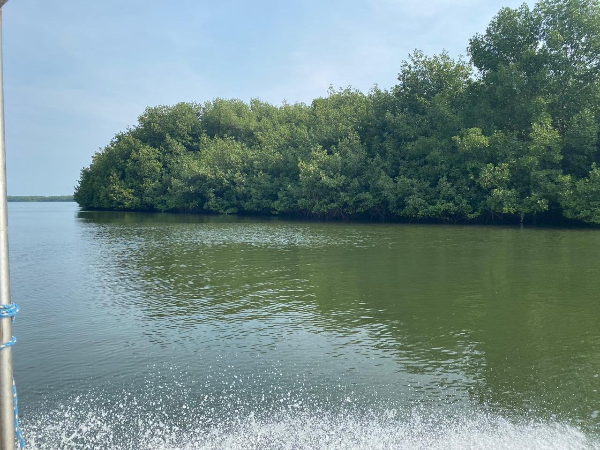

Yemanyá – Agua y Conservación es una organización ecuatoriana sin fines de lucro fundada en 2024 en Esmeraldas. Estamos registrados ante el Ministerio del Ambiente, Agua y Transición Ecológica de Ecuador.
Aunque somos una organización joven, contamos con un equipo con más de 30 años de experiencia en investigación, conservación, educación ambiental y trabajo con comunidades.
Nuestro nombre honra a Yemanyá, deidad u orisha del océano, los peces y los navegantes en la cultura yoruba, hace referencia a nuestra formación y profundo vínculo con los ecosistemas acuáticos, así como el respeto y conexión con las culturas y tradiciones afroesmeraldeñas.
Nuestro logotipo —un mangle— simboliza la unión del agua, la tierra y el aire: los elementos que sostienen la vida en la Tierra.
Trabajamos por un futuro donde los ecosistemas acuáticos y las comunidades costeras prosperen en armonía
Promover el uso sostenible y la conservación del patrimonio natural asociado a los ecosistemas marino - costeros y de aguas dulces continentales para el desarrollo de las comunidades costeras de Ecuador.
Fomentar el desarrollo sostenible y la conservación de ecosistemas marino- costeros y de aguas dulces continentales mediante investigación, educación ambiental, desarrollo local y alianzas estratégicas.
Conoce algunas de nuestras iniciativas de conservación en acción

Investigación sobre anidaciones de tortugas golfinas en las playas de Galerita y Portete, enfocada en monitoreo, proporción sexual y éxito de eclosión.

Programa educativo para reducir la captura incidental de megafauna marina, usando el arte como herramienta pedagógica activa.
Monitoreo sistemático de parámetros físicos, químicos y biológicos en ríos y estuarios para la gestión sostenible del recurso hídrico.
Fortalecimiento del manejo comunitario de manglares a través de los AUSCEM, promoviendo la gobernanza participativa y la conservación sostenible.
Investigación sobre funcionamiento ecológico y biodiversidad de ecosistemas fluviales, fomentando la participación comunitaria y preservación de saberes ancestrales.

Monitoreo de aves como indicadores de cambios ambientales en el Refugio de Vida Silvestre Manglares del Estuario del río Esmeraldas.
Ofrecemos soluciones integrales para la conservación y gestión sostenible de ecosistemas acuáticos
Monitoreo de pesquerías artesanales, análisis de estadísticas de pesca y marisqueo, estudio de artes de pesca.
Evaluación de impactos ecológicos y diseño de sistemas de acuicultura respetuosos con el medio marino.
Monitoreo de nidificación, educación ambiental y fortalecimiento del manejo comunitario.
Evaluación del estado ecológico de ríos, lagunas y represas, análisis de biodiversidad y conectividad.
Uso de macroinvertebrados, diatomeas y plancton para evaluar la calidad ambiental.
Evaluación de biodiversidad y calidad ecológica; diseño y ejecución de planes de restauración.
Programas adaptados para niños, jóvenes y adultos; con aprendizaje activo y arte como herramienta pedagógica.
Diseño e implementación de programas de monitoreo ambiental comunitario.
Análisis climático, modelos matemáticos y estudios sobre vulnerabilidad y adaptación.
Profesionales comprometidos con la conservación de nuestros ecosistemas


Nuestro trabajo en imágenes
Mantente informado sobre nuestras actividades y logros

Este mes celebramos la liberación de 200 crías de tortuga marina en las playas de Esmeraldas...

Más de 100 voluntarios participaron en la jornada de reforestación de manglares...

Lanzamos nuestro programa "Guardianes del Agua" en 10 escuelas de la provincia...
Estamos aquí para responder tus preguntas y escuchar tus ideas
Esmeraldas, Ecuador

Este mes celebramos la liberación de 200 crías de tortuga marina en las playas de Esmeraldas, un logro importante en nuestros esfuerzos de conservación de estas especies en peligro de extinción.
El evento contó con la participación de voluntarios locales, estudiantes y miembros de la comunidad, quienes pudieron ser testigos del momento en que las pequeñas tortugas emprendieron su viaje hacia el océano.
Este programa de conservación ha sido posible gracias al trabajo conjunto con las comunidades locales y el apoyo de instituciones nacionales e internacionales comprometidas con la protección de la biodiversidad marina.

Más de 100 voluntarios participaron en la jornada de reforestación de manglares organizada por Yemanyá en colaboración con comunidades locales de la provincia de Esmeraldas.
Durante la jornada se plantaron más de 500 plántulas de mangle en zonas degradadas del estuario, contribuyendo a la restauración de este ecosistema vital para la protección costera y la biodiversidad marina.
Los manglares son ecosistemas fundamentales que actúan como barreras naturales contra la erosión costera, son hábitat de numerosas especies y juegan un papel crucial en la captura de carbono.

Lanzamos nuestro programa "Guardianes del Agua" en 10 escuelas de la provincia de Esmeraldas, con el objetivo de educar a las nuevas generaciones sobre la importancia de la conservación de los recursos hídricos.
El programa incluye talleres interactivos, actividades de campo y material educativo especialmente diseñado para estudiantes de educación básica y bachillerato.
A través de este programa, esperamos alcanzar a más de 500 estudiantes durante el primer año, fomentando una cultura de cuidado y respeto por los ecosistemas acuáticos en las comunidades costeras de Ecuador.